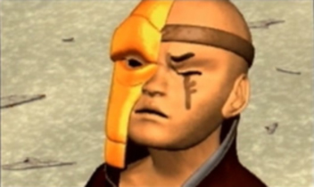
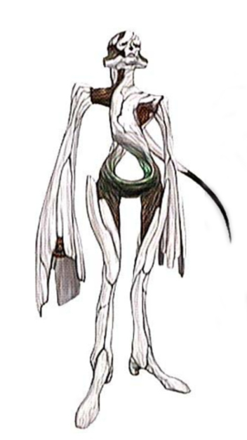
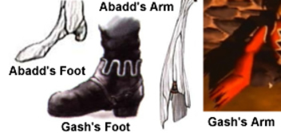
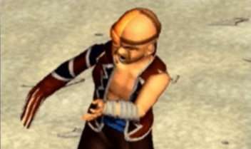
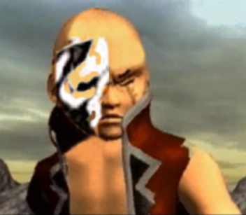

Gash's Identity Theory
 |
|
The mysterious Shadow Eye, or more formerly known as
Gash; the leader of the Seekers. His identity is unknown. An unusual mask
covers half of his face, concealing something secret. Just what lies hidden
under this mask? Also, his right arm is completely covered by his sleeve,
never allowing us to get a glimpse of his hand. We surely will never uncover
his secrets but nevertheless, we can speculate and theorize.
Let’s compare the drone Abadd from Panzer Dragoon Orta to Gash. Notice anything similar? Abadd’s eyes are completely black. If you look closely at Gash’s right eye, the one concealed under his mask, you will notice it is also black. You can even see some skin surrounding this black hole. Very similar to Abadd’s eyes. Next, we look at Abadd’s arms. They have the very same design as the sleeve covering Gash’s right arm. Although Abadd has some sort of stub under the bone armor covering his right arm, we never actually get to see what’s under Gash’s sleeve. Lastly, this may be quite minor, but even Abadd’s feet are similar to Gash’s shoes. Based on these observations, I have come up with two theories. First, Gash may be hiding the fact that he is inevitably a near perfect drone just like Azel. Even though he acts like he is a normal seeker, he seems to know more than anyone about the Ancient Age, and it’s technology. Gash’s memory data could have been damaged over time and like Azel, he could have developed human emotions. It’s certainly possible, considering how human Azel looks. Passing himself off as human by hiding his true identity, he would later join the seekers, and become their leader. My last theory delves into the idea that maybe gash is half drone. How could this be possible you ask? Well, think of it like Anakin Skywalker transitioning over to his half robot self known as Darth Vader. Maybe Gash was horribly mutilated while fighting a bio-engineered monster . With his face terribly disfigured and his right arm cleanly torn off by the ancient beast, Gash barely survives and is rescued by the seekers. Facing iminant death, the seekers attempt to rebuild him. Taking certain parts from a deactivated drone, they apply and reconstruct the right side of his face. Amazingly, they are also able to attach a fully functional and operational drone arm, much like Abadds. The procedure is met with success and Gash recovers from the life threatening incident. Relieved to be alive, but also disgusted by his half drone body, he decides to hide both his face and arm, ultimately keeping his new identity a secret. They call him Shadow Eye. His true identity concealed. The mysteries that lay behind the mask, he will never show. A half drone or just a normal seeker? We will never know. |
 The drone Abadd is similar to Gash in many ways... |
|  From his black eyes, to his elongated arm, even his feet are similar to Gash's shoes. |
|  Is Gash a near perfect drone, or did he just loose his arm and part of his face in a horrible accident? |
|
 Could this be what lies hidden under the mask? Could he be half human half drone? |